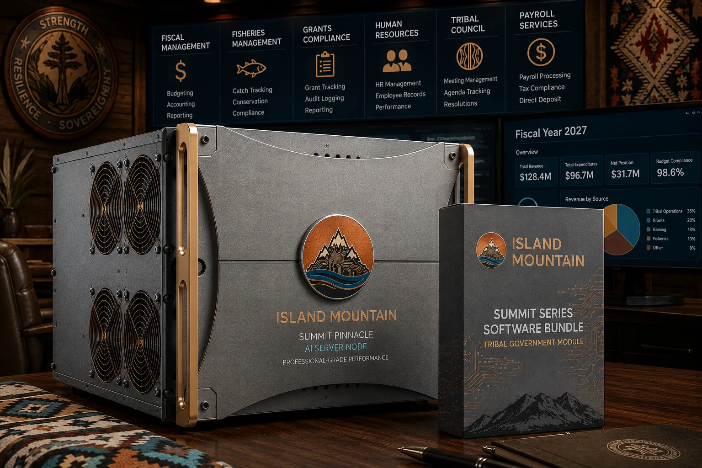

AI Sovereignty Framework for Tribal Nations:
Why On-Premise AI Servers Are a Perfect Match for Tribal Governments
May 2026
Abstract
Cloud-based artificial intelligence platforms place tribal data under the jurisdictional control of U.S.-incorporated technology companies, directly subjecting that data to compelled federal disclosure under the Clarifying Lawful Overseas Use of Data Act (CLOUD Act, 18 U.S.C. § 2523). This is not a theoretical concern. It is the current legal condition of every tribal nation whose health records, emergency operations data, enrollment information, governance documents, and traditional ecological knowledge sit on any commercial cloud server. This framework establishes the legal, operational, and strategic case for on-premise, tribally owned AI infrastructure as the only architecture that is simultaneously OCAP-compliant, HIPAA-defensible, Stafford Act-compatible, and aligned with the self-determination authority granted under the Indian Self-Determination and Education Assistance Act (ISDEAA, P.L. 93-638). The Yurok Tribe's Yurok Telecommunications Corporation (YTEL) network illustrates the sovereignty-first infrastructure model that makes local AI not just viable but operationally superior for tribal governments in frontier and rural environments.
Introduction
Tribal nations are being sold artificial intelligence the same way they were sold every other technology wave: fast, cheap, and from outside. Cloud AI platforms from Microsoft, Google, Amazon, and their downstream resellers are aggressively marketing to Indian Country right now. The pitches look compelling. Low upfront cost. Rapid deployment. Sophisticated natural language tools that can draft grant narratives, summarize damage reports, or cross-reference treaty compliance in seconds.
What those pitches omit is this: the moment tribal health data, enrollment records, emergency operations plans, or governance deliberations move onto a cloud server owned by a U.S.-incorporated technology company, that data leaves the legal protection of tribal sovereignty and enters the jurisdictional reach of the federal government. Not metaphorically. Literally, under active federal statute.
That statute is the Clarifying Lawful Overseas Use of Data Act (CLOUD Act, 18 U.S.C. § 2523, enacted 2018), which amended the Stored Communications Act of 1986 to allow federal law enforcement to compel any U.S.-incorporated technology company to produce data under its custody or control, regardless of where that data physically resides. The legal hook is corporate control, not geographic location. A tribe whose data is processed by a cloud AI vendor has no legal standing to contest a CLOUD Act warrant directed at that vendor, because the warrant is not directed at the tribe. It is directed at a corporation. That corporation is not a sovereign nation. It has no treaty relationship with the United States. It cannot assert tribal sovereign immunity on the tribe's behalf.
This framework addresses the full stack of legal, operational, and strategic dimensions of that problem. It is not an argument against artificial intelligence. It is an argument for owning the infrastructure that runs it. The distinction matters because refusing AI is no longer a realistic posture for tribal emergency management, tribal health administration, or tribal governance operations. AI tools have become operationally necessary. The question is who controls the server those tools run on, and what legal exposure that ownership choice creates.
The answer, supported by the complete body of federal Indian law, data sovereignty frameworks, and emergency management operational requirements, is unambiguous. Tribally owned, on-premise AI infrastructure is the only configuration that simultaneously satisfies OCAP principles, HIPAA protections, ISDEAA self-determination authority, Stafford Act incident data requirements, and the definition of digital sovereignty established in National Congress of American Indians Resolution NC-24-008.
Three Legal Faults in Cloud AI Deployment for Tribal Nations
The legal case against cloud AI for tribal data is not a matter of preference or policy interpretation. It rests on three distinct structural faults, each independently sufficient to disqualify cloud AI for any tribal government operating in good faith under its own data governance commitments.
Fault One: OCAP Violation by Design
The OCAP Principles - Ownership, Control, Access, and Possession - were established by the First Nations Information Governance Centre in 1998 as the governing standard for Indigenous information management.1 The Possession principle is not aspirational. It is the structural requirement from which all other protections derive: tribes must physically hold their own data to meaningfully exercise ownership, control, and access.
Cloud AI violates the Possession principle by definition. When tribal data is processed on a vendor's server, the tribe does not possess it. The vendor does. Every tribal health record, every emergency operations document, every governance deliberation processed through a cloud AI platform is data under third-party possession. For any tribe that has adopted OCAP as its information governance standard - and the framework is broadly endorsed across tribal communities in the United States - cloud AI deployment for sensitive data categories is a direct and unambiguous violation of that standard.
The OCAP framework further asserts that a tribe controls how information about it is collected, analyzed, and used at every stage.2 A cloud AI vendor that ingests tribal data for model improvement, even in anonymized or aggregated form, violates the control principle. The tribe did not authorize its knowledge to train a commercial system. The vendor's terms of service do not constitute tribal authorization. The distinction matters in the same way it mattered when external researchers extracted tribal knowledge for publications that brought careers and grant funding to universities outside Indian Country while returning nothing of lasting value to the communities whose knowledge made those publications possible.
Fault Two: CLOUD Act Jurisdictional Exposure
The CLOUD Act establishes federal law enforcement access to tribal data through a mechanism entirely outside the government-to-government framework that governs federal-tribal relations. The warrant is directed at the technology company. The tribe receives no notification. The tribe has no legal standing to contest the disclosure because it is not the respondent. And because the tribe is not the respondent, none of the procedural protections that would apply to a direct federal request for tribal records - treaty protections, sovereign immunity assertions, government-to-government consultation requirements - apply here.
The operational consequence is concrete. A tribe filing a Public Assistance claim under the Stafford Act, negotiating damages and recovery costs with FEMA following a presidential disaster declaration, may be conducting that negotiation while a federal agency is simultaneously accessing the tribe's internal damage analysis through a CLOUD Act warrant served on the tribe's cloud AI vendor. The tribe's Preliminary Damage Assessment - the foundational document on which its entire PA claim rests - is in the hands of its counterpart before the negotiation table is even set.
As one analysis of the intersection of tribal sovereignty and third-party data custody concluded: if a tribe's data is held by a third party and then seized by outside government entities, the tribe will not be informed that its data is under investigation because it is no longer within its control.3 That sentence is not a hypothetical. It describes the current operating condition of every tribal nation using commercial cloud AI for sensitive data categories.
Fault Three: Data Colonialism in Automated Form
The extraction economy that drove dispossession of tribal lands did not retire. It migrated. Commercial AI platforms are trained on data ingested from the systems that process it. Health outcome patterns from tribal populations, emergency response strategies built through decades of hard-won operational experience, governance language patterns, traditional ecological knowledge embedded in land management records, cultural and linguistic data from language preservation programs - all of it becomes raw training material for commercial systems whose profits flow entirely to corporate shareholders, not to the tribal nations whose knowledge and experience made those systems more capable.
This is not a speculative framing. It is the documented operating model of every major AI platform. Training data is the primary asset. The more diverse, specific, and contextually rich the training data, the more capable and monetizable the resulting model. As researchers tracking Indigenous data governance have documented, AI systems increasingly include Indigenous languages, traditional knowledge, and oral histories, sometimes collected without consent, stored in centralized databases, and used to train commercial algorithms that offer little or no benefit to the Indigenous communities.4 The National Congress of American Indians, in its 2025 response to the White House Office of Science and Technology Policy's AI Action Plan solicitation, affirmed that tribal nations possess inherent sovereign rights to enforce their digital sovereignty standards on AI data and that AI technologies must not circumvent tribal data collection protocols or violate tribal sovereignty.5
Convergent Validation
Three bodies of evidence converge to validate the structural argument above from independent directions.
Pillar One: NCAI Resolution NC-24-008 and the Center for Tribal Digital Sovereignty
In 2024, the National Congress of American Indians passed Resolution NC-24-008, formally defining digital sovereignty for tribal governments. The resolution defines digital sovereignty as the exercise of sovereign authority over physical and virtual network infrastructure and the intangible virtual digital jurisdictional aspects of the acquisition, storage, transmission, access and use of data, including policy developments that impact the tribe's digital footprint in local and virtual spaces.6
The operative phrase is physical and virtual. NCAI's definition of digital sovereignty is not limited to policy preferences about data use. It explicitly requires tribal authority over the physical infrastructure through which data moves and is stored. A tribe using a commercial cloud AI platform has ceded physical infrastructure authority to a technology vendor. By NCAI's own definition, that tribe is not exercising digital sovereignty.
Concurrent with the resolution, NCAI and Arizona State University's American Indian Policy Institute launched the Center for Tribal Digital Sovereignty in June 2024 - the first institution of its kind dedicated to helping tribal governments develop sovereign digital infrastructure plans. The Center's founding Executive Director Dr. Traci Morris stated at launch that tribal digital sovereignty includes both the information and the physical means by which it transfers, and that it is governance, it is economic, it is self-determination.7 The physical infrastructure is not peripheral to the framework. It is the foundation of it.
Pillar Two: The CLOUD Act as the Digital Allotment Act
The Dawes Allotment Act of 1887 did not dispossess tribal nations through a single dramatic act. It did it through a legal mechanism that converted communal land into individually owned parcels, creating the conditions under which land could be sold, transferred, and ultimately alienated from tribal control through the ordinary operation of property law. The dispossession was structural, not episodic.
The CLOUD Act operates on identical structural logic in the digital domain. It does not require a dramatic breach. It creates the legal conditions under which tribal data, once placed in third-party corporate custody, can be accessed and alienated from tribal control through the ordinary operation of federal warrant authority. Tribes that place sensitive data in commercial cloud infrastructure are creating the digital equivalent of allotted parcels: individually held by a corporation, technically accessible to the tribe under contractual terms, and fully subject to federal legal process through a mechanism that bypasses tribal sovereignty entirely.
The Brookings Institution's analysis of tribal digital sovereignty and AI noted that on-premises solutions that feature local servers can be erected on tribal lands and managed directly by a tribal nation or tribally owned entity - a solution that reflects fundamental digital sovereignty principles.8 The Cherokee Nation has moved in exactly this direction, spending a year working with a closed-source, internally governed AI model to build its own knowledge base while keeping tribal values at the center of every implementation decision. Cherokee Nation Chief Information Officer Paula Starr has stated plainly that if a tool compromises tribal values, it does not belong in their Nation's systems.9
Pillar Three: Emergency Management Operational Requirements
The intersection of the Stafford Act, the Homeland Security Exercise and Evaluation Program (HSEEP), and HIPAA creates a set of operational data requirements that are structurally incompatible with cloud AI deployment for tribal emergency management functions.
Under 42 U.S.C. §§ 5121-5207, as amended by the Sandy Recovery Improvement Act of 2013, tribal nations may request presidential disaster declarations directly from the President, independent of state governments.10 That declaration authority generates an extraordinary body of sensitive operational data: Preliminary Damage Assessments documenting the specific locations and conditions of tribal infrastructure, Public Assistance applications revealing the complete scope of tribal government resources and fiscal capacity, Individual Assistance records containing Protected Health Information for tribal citizens, and Hazard Mitigation Grant Program applications exposing detailed vulnerability analyses of tribal land, water systems, and cultural resources. All of this data, if processed through cloud AI during an active incident, is simultaneously subject to CLOUD Act compelled disclosure at the precise moment the tribe is negotiating with the federal agencies that could theoretically obtain it.
HSEEP-compliant exercise documentation presents an equally serious exposure. After-Action Reports and Improvement Plans produced under HSEEP standards are comprehensive maps of where tribal emergency response capacity fails under pressure. They identify specific gaps in communications, logistics, medical surge capacity, and interagency coordination. That documentation, processed through cloud AI, is intelligence under third-party control - intelligence about the tribe's vulnerabilities, accessible through federal warrant without tribal notification.
HIPAA's requirements compound both exposures. Tribal health clinics and Indian Health Service-coordinated facilities operate as Covered Entities under HIPAA's Privacy, Security, and Breach Notification Rules. During disasters, when EOC operations coordinate medical response, track casualties, manage pharmaceutical logistics, and coordinate with IHS for surge capacity, Protected Health Information flows actively into emergency management operations. Cloud AI vendors may offer Business Associate Agreements, as required under 45 C.F.R. § 164.504(e). But a BAA governs the vendor's contractual obligations to the tribe. The CLOUD Act governs the vendor's legal obligations to the federal government. When those obligations conflict, federal law supersedes the contract. The BAA is not a CLOUD Act shield.
The Yurok Model: Sovereignty Built in Layers
The Yurok Tribe's Yurok Telecommunications Corporation (YTEL) offers the most operationally compelling example in Indian Country of what sovereignty-first infrastructure development looks like when carried through to completion. In July 2025, YTEL broke ground on four interlocking broadband projects covering approximately 150 square miles of Yurok ancestral lands - connecting more than 2,000 locations across a corridor from Orick north to Crescent City and east to Weitchpec, some of the most digitally underserved terrain in California.11
The projects deploy 62 miles of fiber optic cable, nine commercial-grade wireless towers, and a fiber lease agreement with the California Department of Technology under which YTEL retains full ownership of the leased fiber.12 The structure is deliberate: state and federal funding through the National Telecommunications and Information Administration's Tribal Broadband Connectivity Program, the California Public Utilities Commission, and CDT provided construction capital. But YTEL owns the fiber. YTEL operates the network. The sovereignty of the infrastructure - on and around Yurok ancestral lands - is tribally held and tribally controlled.
Yurok Tribal Chairman Joseph L. James described the projects at groundbreaking as an expression of tribal self-determination and a desire to build the future the community deserves. That framing is precise. YTEL is not building connectivity for its own sake. It is building the physical infrastructure of self-determination - the pipes through which tribal governance, health, education, emergency management, and economic activity move. Jon Walton, CEO of Yurok Telecommunications, has consistently described the mission in terms of infrastructure sovereignty: the sovereignty of the infrastructure on and around reservations is very important.13
YTEL is the network layer. On-premise AI is the compute layer. A tribally owned AI server, connected to YTEL's fiber backbone, processing tribal government data within tribal jurisdiction, creates a complete sovereign digital infrastructure stack: owned connectivity, owned compute, owned data. During emergency operations - a coastal earthquake, a wildland fire along the Trinity corridor, a tsunami evacuation on the Klamath coast - that architecture means the EOC's AI-assisted situational awareness tools, damage assessment processing, resource tracking, and Incident Action Plan development all operate on tribal infrastructure, over tribal network, within tribal jurisdiction. No cloud dependency. No CLOUD Act exposure through a corporate vendor. No interruption if external internet connectivity fails - which is precisely the failure condition most likely during a federally declared disaster in a rural tribal jurisdiction.
When FEMA regional staff arrive for coordinated response, the tribe presents from a position of informational sovereignty. The Preliminary Damage Assessment data the tribe's AI system helped compile stays under tribal control through the entire Public Assistance negotiation. The tribe controls what it shares and when. That is not a hypothetical advantage. It is a structural shift in the power relationship between a tribal government and its federal counterpart during the most consequential operational period a tribal emergency manager will ever navigate.
Operational Use Cases Across Tribal Government
The following operational categories represent the highest-priority deployment contexts for on-premise AI in tribal government. They are organized by data sensitivity and operational urgency, not by department.
Emergency Management and EOC Operations
Emergency managers are among the highest-volume users of document-intensive analytical work in any tribal government department. During a declared disaster, an EOC team simultaneously processes incoming field reports, produces multiple operational period Action Plans, coordinates logistics across departments and partner agencies, tracks resource requests and expenditures for eventual Public Assistance reimbursement, and maintains situational awareness across a rapidly evolving environment. Local AI handles all of this without cloud dependency. It summarizes damage reports, drafts IAP components, cross-references resource inventories, and generates cost documentation for PA applications - operating from the tribal network without transmitting incident data outside tribal jurisdiction. In a connectivity-degraded environment, which is the most likely operating condition during a major declared disaster in a rural tribal jurisdiction, the system continues operating offline.
Hazard Mitigation Planning
Tribal Hazard Mitigation Plans, required under Stafford Act Section 322 as a prerequisite for Hazard Mitigation Grant Program funding, are exhaustively detailed vulnerability assessments documenting every significant hazard facing tribal lands, populations, and infrastructure. That vulnerability mapping - covering earthquake, flood, wildfire, tsunami, drought, dam failure, cyber threats, and human-caused hazards - constitutes some of the most sensitive strategic data a tribal government produces. It is a comprehensive map of where the tribe is most exposed. Local AI accelerates update cycles while ensuring that vulnerability analysis stays within tribal jurisdiction. Newly constructed or acquired infrastructure, such as YTEL's fiber network, can be integrated into the HMP framework through AI-assisted analysis without transmitting the underlying data to a third-party server.
Tribal Health Services and HIPAA-Governed Data
Tribal health clinics managing PHI under HIPAA, coordinating with IHS for referrals and billing, tracking chronic disease patterns, and supporting emergency medical operations during disasters represent the clearest and most legally consequential use case for local AI deployment. Clinical note drafting, drug interaction analysis, patient history summarization, and population health pattern identification are all high-value AI applications that involve PHI which cannot legally travel to commercial cloud servers without a BAA - and which remain exposed to CLOUD Act compelled disclosure even with a BAA in place. Local AI eliminates that exposure entirely, and keeps every access to that PHI under governance and audit the tribe controls.
Governance, Grants, and Treaty Compliance
Tribal council operations generate decades of governance documentation: ordinances, resolutions, negotiated agreements, land management decisions, treaty compliance records, and grant reporting. This governance corpus is the institutional memory of the tribe's self-determination. Local AI that can search that corpus, identify precedent in tribal law, draft policy language consistent with existing governance decisions, and cross-reference grant requirements against current program operations creates substantial operational capacity. That governance intelligence should remain within tribal jurisdiction, not contribute to the training datasets of commercial AI systems.
Language and Cultural Preservation
Traditional ecological knowledge, oral history documentation, and Indigenous language materials are among the most culturally irreplaceable data tribal nations hold. These materials should never enter commercial AI training pipelines. Local AI can assist with language documentation, translation support, and cultural knowledge organization while the underlying materials remain completely under tribal control, inaccessible to commercial data extraction or federal warrant authority.

Summit Series configured for tribal government: data sovereignty built into the hardware
Doctrine and Recommendations
The Sovereignty Infrastructure Doctrine
Cloud AI is a convenience that functions as a sovereignty trap. The upfront cost advantage is real. The data governance exposure is larger and is not visible on any invoice. It appears in diminished negotiating position during federal disaster declarations, in compromised citizen trust when health data is accessed without notification, and in the slow erosion of the self-determination authority that five decades of federal Indian policy reform has been building toward. The infrastructure choice is not a technology procurement decision. It is a sovereignty decision with legal, operational, and generational consequences.
On-premise AI infrastructure, deployed under tribal ownership and operating within tribal jurisdiction, converts the aspiration of digital sovereignty into technical reality. It is the architecture that matches the rights that OCAP articulates, that NCAI Resolution NC-24-008 defines, that ISDEAA's self-determination framework implies, and that the government-to-government relationship with the United States demands.
Recommendations for Tribal Councils
Authorize on-premise AI infrastructure as a digital sovereignty assertion, not a technology purchase. Frame the decision in terms of the tribe's existing ISDEAA self-determination commitments, OCAP adoption, and the data governance principles already embedded in tribal law and policy. Commission an inventory of all tribal data categories currently processed through cloud AI or cloud-dependent platforms, assess each category against the sovereignty standards this framework establishes, and establish a migration timeline for sensitive data categories. Prioritize emergency management, health, and governance data.
Recommendations for Tribal Emergency Managers
Audit current EOC and pre-incident planning tools for cloud dependency. Identify every data category generated during a Stafford Act declaration - Preliminary Damage Assessments, resource tracking, casualty data, Public Assistance cost documentation - and assess whether those categories are currently processed through cloud infrastructure. Present the CLOUD Act exposure analysis to tribal leadership in the context of active federal negotiations during declared disasters. Advocate for on-premise AI as emergency management infrastructure, not as a general technology capability, because the operational and legal case is strongest in that context.
Recommendations for Federal Partners and Grant Administrators
FEMA, NTIA, and HHS should recognize tribally owned on-premise AI infrastructure as eligible for funding under existing tribal capacity-building authorities, including BRIC, HMGP, and tribal broadband programs. The Stafford Act's recognition of tribal governments as direct declaration recipients creates an implicit obligation to support the data governance infrastructure those governments need to manage declaration processes with full informational sovereignty. Federal AI policy frameworks, including the NCAI-recommended provisions of a national AI Action Plan, should formally recognize that cloud-based AI deployment for tribal data categories is structurally incompatible with tribal sovereignty and the government-to-government relationship.
Conclusion
The legal case is settled. OCAP's Possession principle requires physical tribal data control. The CLOUD Act eliminates meaningful third-party protection for tribal data held in commercial cloud infrastructure. NCAI Resolution NC-24-008 defines digital sovereignty as encompassing the physical infrastructure of data transmission and storage. ISDEAA self-determination authority is functionally undermined when the operational data of self-governed programs sits in federally accessible third-party systems. HIPAA's PHI protections are necessary but not sufficient against CLOUD Act compelled disclosure. Stafford Act emergency declaration processes generate data sensitivity that demands jurisdictional control during active federal negotiations.
The operational case is equally settled. On-premise AI operates when cloud connectivity fails - precisely during declared disasters when AI-assisted emergency management is most critical. It processes sensitive data categories without jurisdictional exposure. It builds tribal capital assets rather than generating recurring vendor revenue. And for tribes building sovereignty-first telecommunications infrastructure, as the Yurok Tribe is doing through YTEL, on-premise AI is the natural and necessary next layer of that same stack.
Tribal nations fought to retain physical sovereignty over their lands. That fight has now extended into the digital domain. The data generated by tribal communities about their own lives, lands, health, and governance is as much a tribal resource as the rivers and forests that ancestors defended. Data carries ancestors in it. It carries language. It carries the knowledge of when the salmon run and where the fire moved and what the water said in a dry year. It carries the operational intelligence of emergency managers who kept communities alive through declared disasters and wildfire evacuations. It carries the clinical histories of citizens who trusted their health system with their most personal information.
The infrastructure that processes that data should belong to the tribe. On-premise AI, tribally owned and tribally controlled, is how that belonging works in practice. The infrastructure we build for AI in Indian Country is either an act of sovereignty or an act of surrender. There is no neutral choice.
Bibliography
Andersen, Nick. Written Testimony before the House Homeland Security Committee on the Effect of the DHS Shutdown on Agency Missions. March 2026.
Brookings Institution. "Avoiding the Next Digital Divide: Defining Digital Sovereignty for Tribal Nations in the AI Age." Brookings, 2024.
Cybersecurity and Infrastructure Security Agency. Artificial Intelligence Risk Categories and Mitigation Strategies for Critical Infrastructure. Version 1.0. Washington, DC: CISA, December 2023.
First Nations Information Governance Centre. Ownership, Control, Access and Possession (OCAP): The Path to First Nations Information Governance. Ottawa: FNIGC, 2014.
Gila River Indian Community News. "Tribal Nations and the Rise of AI." gricnews.org, 2025.
Indian Self-Determination and Education Assistance Act. Public Law 93-638, as amended. 25 U.S.C. §§ 5301 et seq. (1975).
Island Mountain. "Tribal Data Sovereignty and the Cloud AI Problem." islandmountain.io, May 2026.
Island Mountain. "OCAP Principles and the CLOUD Act." islandmountain.io, May 2026.
National Congress of American Indians. NC-24-008: Supporting Tribal Digital Sovereignty as an Exercise of Self-Determination. Resolution adopted at the 2024 Mid Year Convention. Washington, DC: NCAI, 2024.
National Congress of American Indians. Response to NITRD National Coordination Office Request for Information on the Development of an Artificial Intelligence Action Plan. 90 Fed. Reg. 9,088 (Feb. 6, 2025).
National Indian Health Board. 2025 Tribal Health Data Symposium: Strengthening Sovereignty Through Data. Washington, DC: NIHB, March 2025.
Policy Options / IRPP. "AI and Indigenous Data: Addressing the Digital Sovereignty Gap." policyoptions.irpp.org, 2025.
Robert T. Stafford Disaster Relief and Emergency Assistance Act. Public Law 100-707, as amended. 42 U.S.C. §§ 5121-5207 (1988).
Tgandh.com. "Tribal Sovereignty Over Data and Core System Rights." tgandh.com, n.d.
U.S. Department of Homeland Security. Mitigating Artificial Intelligence Risk: Safety and Security Guidelines for Critical Infrastructure Owners and Operators. Washington, DC: DHS, April 26, 2024.
Wipfli LLP. "AI for Tribes: Managing Risk and Maximizing Impact." wipfli.com, 2024.
Yurok Tribe. "Yurok Tribe Celebrates Start of Four Broadband Projects." yuroktribe.org, July 2025.
Yurok Telecommunications Corporation. National Telecommunications and Information Administration Tribal Broadband Connectivity Program Award. NTIA, 2021.
Endnotes
- First Nations Information Governance Centre, Ownership, Control, Access and Possession (OCAP): The Path to First Nations Information Governance (Ottawa: FNIGC, 2014).
- Ibid.
- Tgandh.com, "Tribal Sovereignty Over Data and Core System Rights."
- Policy Options / IRPP, "AI and Indigenous Data," policyoptions.irpp.org, 2025.
- National Congress of American Indians, Response to NITRD National Coordination Office Request for Information on the Development of an Artificial Intelligence Action Plan, 90 Fed. Reg. 9,088 (Feb. 6, 2025).
- National Congress of American Indians, NC-24-008: Supporting Tribal Digital Sovereignty as an Exercise of Self-Determination (NCAI 2024 Mid Year Convention, 2024).
- NCAI and Arizona State University American Indian Policy Institute, Launch of the Center for Tribal Digital Sovereignty, June 4, 2024.
- Brookings Institution, "Avoiding the Next Digital Divide: Defining Digital Sovereignty for Tribal Nations in the AI Age," 2024.
- Gila River Indian Community News, "Tribal Nations and the Rise of AI," gricnews.org, 2025.
- Robert T. Stafford Disaster Relief and Emergency Assistance Act, 42 U.S.C. §§ 5121-5207 (1988), as amended by the Sandy Recovery Improvement Act of 2013, Pub. L. 113-2.
- Yurok Tribe, "Yurok Tribe Celebrates Start of Four Broadband Projects," yuroktribe.org, July 2025.
- California Department of Technology, Broadband for All Update, August 2025.
- Indigenous Economic Development, "Unlocking Opportunity: How Developing Tribal Broadband Advances Communities," indigenouscop.org, 2025.